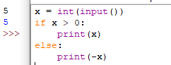
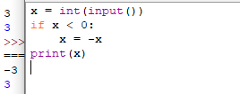
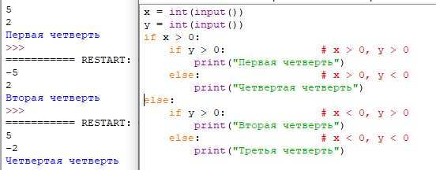
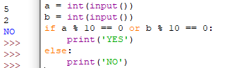
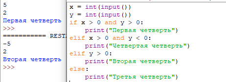

1. Синтаксис условной инструкции
Все ранее рассматриваемые программы имели линейную структуру: все инструкции выполнялись последовательно одна за одной, каждая записанная инструкция обязательно выполняется.Допустим мы хотим по данному числу x определить его абсолютную величину (модуль). Программа должна напечатать значение переменной x, если x>0 или же величину -x в противном случае. Линейная структура программы нарушается: в зависимости от справедливости условия x>0 должна быть выведена одна или другая величина. Соответствующий фрагмент программы на Питоне имеет вид:

Код 1.1
В этой программе используется условная инструкция if (если). После слова if указывается проверяемое условие (x > 0), завершающееся двоеточием. После этого идет блок (последовательность) инструкций, который будет выполнен, если условие истинно, в нашем примере это вывод на экран величины x. Затем идет слово else (иначе), также завершающееся двоеточием, и блок инструкций, который будет выполнен, если проверяемое условие неверно, в данном случае будет выведено значение -x.
Итак, условная инструкция в Питоне имеет следующий синтаксис:
if Условие:
Блок инструкций 1
else:
Блок инструкций 2
Блок инструкций 1 будет выполнен, если Условие истинно. Если Условие ложно, будет выполнен Блок инструкций 2.
В условной инструкции может отсутствовать слово else и последующий блок. Такая инструкция называется неполным ветвлением. Например, если дано число x и мы хотим заменить его на абсолютную величину x, то это можно сделать следующим образом:

Код 1.2
В этом примере переменной x будет присвоено значение -x, но только в том случае, когда x<0. А вот инструкция print(x) будет выполнена всегда, независимо от проверяемого условия.
Для выделения блока инструкций, относящихся к инструкции if или else в языке Питон используются отступы. Все инструкции, которые относятся к одному блоку, должны иметь равную величину отступа, то есть одинаковое число пробелов в начале строки. Рекомендуется использовать отступ в 4 пробела и не рекомедуется использовать в качестве отступа символ табуляции.
2. Вложенные условные инструкции
Внутри условных инструкций можно использовать любые инструкции языка Питон, в том числе и условную инструкцию. Получаем вложенное ветвление – после одной развилки в ходе исполнения программы появляется другая развилка. При этом вложенные блоки имеют больший размер отступа (например, 8 пробелов). Покажем это на примере программы, которая по данным ненулевым числам x и y определяет, в какой из четвертей координатной плоскости находится точка (x,y):

Код 2.1
В этом примере мы использовали комментарии – текст, который интерпретатор игнорирует. Комментариями в Питоне является символ # и весь текст после этого символа до конца строки
3. Операторы сравнения
Как правило, в качестве проверяемого условия используется результат вычисления одного из следующих операторов сравнения:
<
Меньше — условие верно, если первый операнд меньше второго.
>
Больше — условие верно, если первый операнд больше второго.
<=
Меньше или равно.
>=
Больше или равно.
==
Равенство. Условие верно, если два операнда равны.
!=
Неравенство. Условие верно, если два операнда неравны.
Например, условие (x * x < 1000) означает “значение x * x меньше 1000”, а условие (2 * x != y) означает “удвоенное значение переменной x не равно значению переменной y”.
Операторы сравнения в Питоне можно объединять в цепочки (в отличии от большинства других языков программирования, где для этого нужно использовать логические связки), например, a == b == c или 1 <= x <= 10.
Это одно из существенных отличий синтаксиса Питона от синтаксиса большинства языков, в которых блоки выделяются специальными словами, например, нц... кц в Кумире, begin... end в Паскале или фигурными скобками в Си.
4. Тип данных bool
Операторы сравнения возвращают значения специального логического типа bool. Значения логического типа могут принимать одно из двух значений: True (истина) или False (ложь). Если преобразовать логическое True к типу int, то получится 1, а преобразование False даст 0. При обратном преобразовании число 0 преобразуется в False, а любое ненулевое число в True. При преобразовании str в bool пустая строка преобразовывается в False, а любая непустая строка в True.
4.1. Логические операторы
Иногда нужно проверить одновременно не одно, а несколько условий. Например, проверить, является ли данное число четным можно при помощи условия (n % 2 == 0) (остаток от деления n на 2 равен 0), а если необходимо проверить, что два данных целых числа n и m являются четными, необходимо проверить справедливость обоих условий: n % 2 == 0 и m % 2 == 0, для чего их необходимо объединить при помощи оператора and (логическое И): n % 2 == 0 and m % 2 == 0.
В Питоне существуют стандартные логические операторы: логическое И, логическое ИЛИ, логическое отрицание.
Логическое И является бинарным оператором (то есть оператором с двумя операндами: левым и правым) и имеет вид and. Оператор and возвращает True тогда и только тогда, когда оба его операнда имеют значение True.
Логическое ИЛИ является бинарным оператором и возвращает True тогда и только тогда, когда хотя бы один операнд равен True. Оператор “логическое ИЛИ” имеет вид or.
Логическое НЕ (отрицание) является унарным (то есть с одним операндом) оператором и имеет вид not, за которым следует единственный операнд. Логическое НЕ возвращает True, если операнд равен False и наоборот.
Пример. Проверим, что хотя бы одно из чисел a или b оканчивается на 0:

Код 4.1
Пример проверим, что число a — положительное, а b — неотрицательное:
if a > 0 and not (b < 0):
Или можно вместо not (b < 0) записать (b >= 0).
5. Каскадные условные инструкции
Пример программы, определяющий четверть координатной плоскости, можно переписать используя “каскадную“ последовательность операцией if... elif... else:

Код 5
В такой конструкции условия if, ..., elif проверяются по очереди, выполняется блок, соответствующий первому из истинных условий. Если все проверяемые условия ложны, то выполняется блок else, если он присутствует.